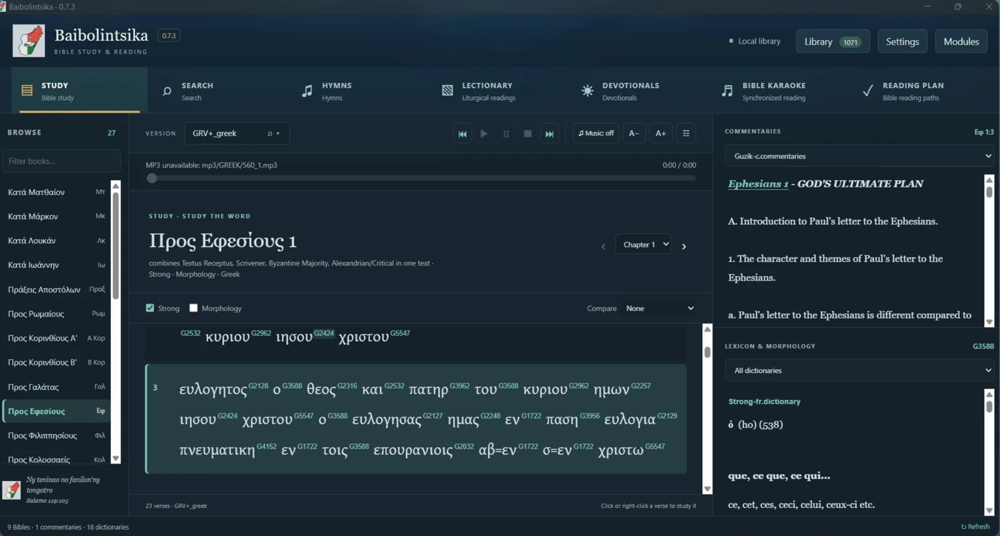
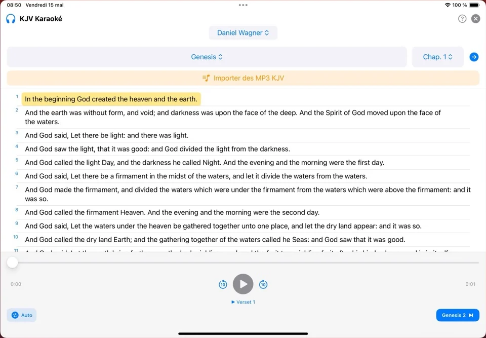

L’UNIVERS BAIBOLINTSIKA
La Parole pour
toutes les nations.
Une même foi. Trois façons d’explorer la Bible.
Sur vos appareils, dans votre navigateur,
au cœur de votre quotidien.
« Allez, faites de toutes les nations des disciples… »MATTHIEU 28:19


TROIS OUTILS. UNE VOCATION.
À chaque moment,
sa façon de lire.
Lire, comprendre, approfondir.
Choisissez le compagnon qui correspond
à votre manière de vivre la Parole.
Baibolintsika
La Bible.
Avec vous,
chaque jour.
Lisez, cherchez et comparez les textes bibliques. Retrouvez les hymnes FFPM et des outils d’étude pour nourrir votre foi, où que vous soyez.
- Lecture et recherche bibliques
- Comparaison des textes et outils d’étude
- Hymnes FFPM et lecture audio
iPhone · iPad · macOS · Apple Watch
Android · Galaxy Watch
BaibolintsikaVerse
Une référence.
Toute la Parole.
Une référence biblique croisée sur le Web devient une invitation à lire. Ouvrez le passage, retrouvez son contexte et poursuivez votre étude sans quitter votre navigateur.
- Trois Bibles : malagasy, français et anglais
- Reconnaissance des références sur les pages
- Lecture et recherche bibliques hors ligne
Baibolintsika Yachad
Plus d’espace.
Plus de profondeur.
Prenez le temps d’étudier sur grand écran. Rapprochez les textes, explorez les langues originales et gardez votre bibliothèque biblique à portée de main.
- Textes bibliques et langues originales
- Commentaires, lexiques et outils d’étude
- Lecture, hymnes et préparation de sermons
VOTRE PROCHAIN PAS
La bonne application.
Sur votre appareil.
Tous les liens officiels, au même endroit.
Choisissez votre univers pour commencer.
Votre compagnon quotidien.
Sur téléphone, tablette, Mac et montre.
La Bible au fil du Web.
Installez l’extension de votre navigateur.
Votre espace d’étude.
Un environnement pensé pour l’ordinateur.
Les liens ouvrent les boutiques officielles. La compatibilité et les fonctionnalités dépendent de la plateforme et de la version proposée.
UNE VOCATION SANS FRONTIÈRES
Un même Évangile.
Partout où vous êtes.
Né d’un attachement à la Parole et à la langue malagasy,
l’univers Baibolintsika vous invite à lire, étudier et partager la Bible.